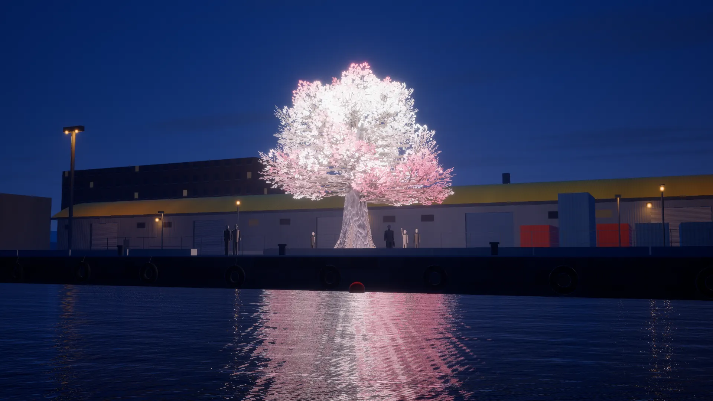

Trettenparken, Filipstad·on the Oslo fjord
Fourteen metres of light, standing by the water at Filipstad.
Grown from the memory of the Ténéré's lone acacia, it first stood in a desert.
Drag to look around
The Oslo tree, fourteen metres of light at Trettenparken on the Oslo fjord.